週五突然想到 Excel 是否能載入 JSON 檔案或是 WebAPI 的資料，因為 PowerBI 可以做到，想說 Excel 應該也可以，所以就來試試看
一樣的，我們拿 [JSONPlaceholder](https://jsonplaceholder.typicode.com/) 所提供的 API 來當作範例資料，使用 https://jsonplaceholder.typicode.com/posts 這組資料
步驟
-
建立一個空的 Excel 檔案
-
選擇
資料Tab 內的從 web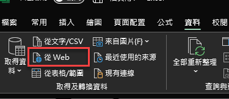
-
將文章一開始的網址貼入到 URL 內後按下『確定』
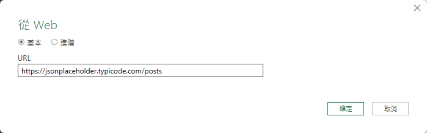
-
會開啟存取 Web 內容的視窗，這邊如果 API 有相關權限設定，可在這邊進行設定
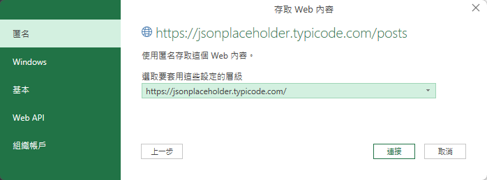
-
確認後下『連接』，Excel 會去呼叫 API 並取回資料
-
取得資料後會開啟 Power Query 編輯器
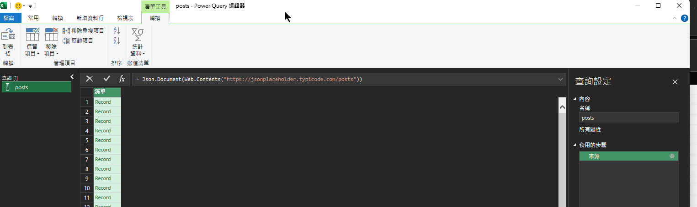
這時候我們就需要針對取回得資料作一些轉換的設定
-
點 『到表格』
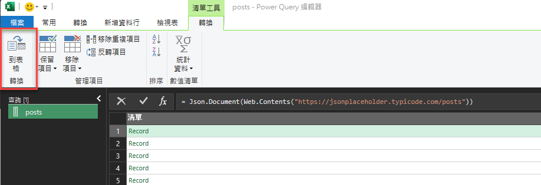
-
無分隔符號，直接按下『確定』
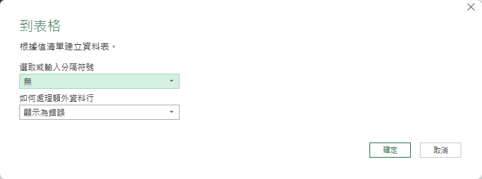
-
這時候畫面會轉換成以下圖片
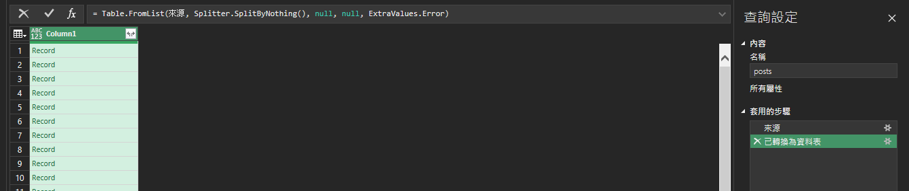
-
點選 Column1 旁邊的小圖示，這個動作會開啟另外一個視窗來設定要展開哪些欄位
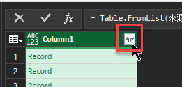
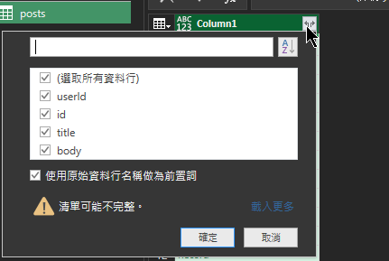
-
如果確認後沒問題就可以按下『確定』。備註: 如果不想要使用原始資料行列名稱當前置詞，可以把設定取消掉
-
瀏覽資料，確認無誤後按下『關閉並載入』即可在 Excel 上看到資料了
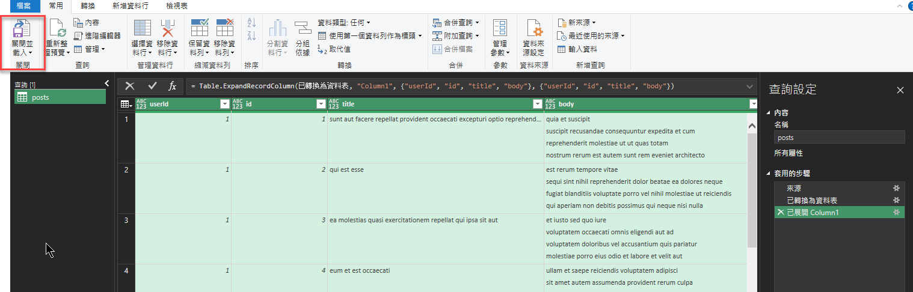
-
最終成果
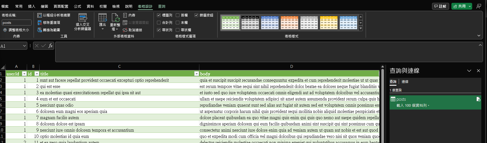
如果想要手動更新 API 得資料，單純點選這個圖示即可，或是上方的『重新整理』
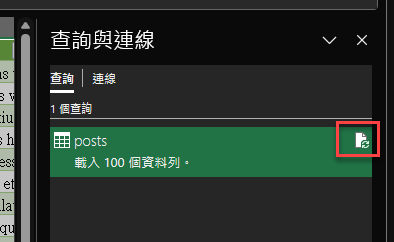
-
修改 Query
如果想要回頭編輯 Query 的方式，可以從這個地方將 Power Query 編輯器開啟
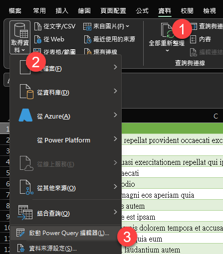